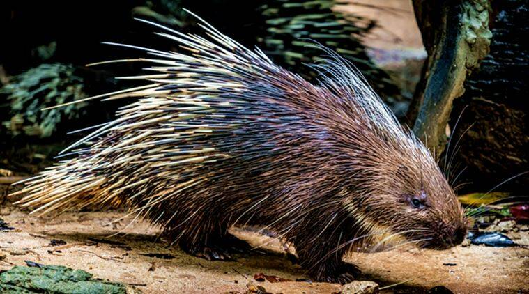

Location : Dibrugarh and Tinsukia districts of Assam
Established in : 2020
Area : 231.65 km2 Flora : Wet tropical evergreen Assam valley forests and rainforests
Fauna : 47 mammal species, 47 reptile species and 310 butterfly species have been recorded. The
most common mammal species of this National Park are hoolock gibbon, slow loris, Assamese macaque, stump-tailed
macaque, capped langur, Asian elephant, Bengal tiger, Indian leopard, gaur, Chinese pangolin, Himalayan black bear,
Red giant flying squirrel, leopard cat, clouded leopard, porcupine, crab eating mongoose, sambar, sun bear,
binturong, barking deer, Asian golden cat and marbled cat.
Avifauna includes slender-billed vulture, white-winged duck, greater adjutant, lesser adjutant, greater spotted
eagle, yellow-vented warbler, broad-billed warbler, white-naped yuhina, white-cheeked partridge, great hornbill,
brown hornbill, Oriental darter, osprey, kalij pheasant, grey peacock pheasant, besra, black baza and hill myna.
Climate : Tropical with annual rainfall of over 4000 mm
Features : It forms the largest stretch of lowland rainforests in India.
Dehing Patkai National Park
Asian elephant
Clouded leopard
Dibru-Saikhowa National Park
Location : Dibrugarh and Tinukia districts of Assam.
Established in : 1999
Area : 340 km2 Flora : semi-evergreen forests, deciduous, littoral and swamp forests and patches of wet
evergreen forests
Fauna : Mammals found are Bengal tiger, Indian leopard, clouded leopard, jungle cat, sloth bear,
dhole, small Indian civet, Malayan giant squirrel, Chinese pangolin, Gangetic dolphin, slow loris, pig tailed macaque,
Assamese macaque, rhesus macaque, capped langur, Hoolock gibbon, Asian elephant, wild boar, Sambar deer, hog
deer, barking deer, Asiatic water buffalo, and feral horse.
Among reptiles, two species of monitor lizard, eight turtle species and eight snake species have been recorded.
Birds found are greater adjutant, ferruginous pochard, Jerdon's babbler, black-breasted parrotbill, marsh babbler,
puff-throated babbler, Jerdon's bushchat, rufous-rumped grassbird, chestnut-crowned bush warbler, lesser adjutant,
Sarus crane, Bengal florican, spot-billed pelican, white-necked stork, black stork, black-necked stork, white-bellied
heron, glossy ibis, fulvous whistling-duck, bar-headed goose, common shelduck, white-winged duck, Indian spot-billed
duck, Baer's pochard, swamp francolin, Himalayan griffon, white-tailed eagle, Pallas's fish-eagle, grey-headed fish
eagle, greater spotted eagle, white-backed vulture, slender-billed vulture, lesser kestrel, brown fish owl, great
pied hornbill, spotted redshank, spotted greenshank, Indian cormorant, grey heron, purple heron, black-crowned night
heron, yellow bittern, Asian openbill, greylag goose, northern pintail, osprey, crested serpent-eagle, white-winged
wood duck, pale-capped pigeon.
Features : It was designated a Biosphere Reserve in July 1997.
Dibru-Saikhowa National Park
Feral horses
Chinese pangolin
Kaziranga National Park
Location : Golaghat, Karbi Anglong and Nagaon districts of Assam.
Established in : 1974
Area : 378 km2 Flora : Four main types of vegetation exist here : alluvial inundated grasslands, alluvial savanna
woodlands, tropical moist mixed deciduous forests, and tropical semi-evergreen forests.
Fauna : Great one-horned rhinoceros, Indian elephant, otter, Bengal Tiger, eastern swamp deer,
wild Asiatic water buffalo, gaur, sambar, wild boar, hog deer, etc.
birds inhabiting Kaziranga include the great Indian hornbill and wreathed hornbill, Indian roller, Old World babblers
such as Jerdon's and marsh babblers, weaver birds such as the common baya weaver, threatened Finn's weavers, thrushes
such as Hodgson's bushchat and Old World warblers such as the bristled grassbird.
Climate : Winter season between November and February, Summer season between March and May, Rainy
season between June and September.
Features : It is a World Heritage Site holding two-thirds of the world's great one-horned rhinoceroses.
It is also a Tiger Reserve since 2006.
Kaziranga National Park
Great one-horned rhinoceros
Sambar
Great Indian hornbill
Manas National Park
Location : Himalayan foothills, contiguous with the Royal Manas National Park in Bhutan.
Established in : 1990
Area : 360 km2 Flora : The major types of vegetation are :
1. Sub-Himalayan light alluvial semi-evergreen forests in the northern parts.
2. East Himalayan mixed moist and dry deciduous forests
3. Low alluvial savanna woodland, and
4. Assam Valley semi-evergreen alluvial grasslands which cover almost 50% of the park.
Fauna : Indian elephants, Indian rhinoceros, gaurs, Asian water buffaloes, barasingha, Indian
tigers, Indian leopards, clouded leopards, Asian golden cats, dholes, capped langurs, golden langurs, Assamese
macaques, slow loris, hoolock gibbons, smooth-coated otters, sloth bears, barking deers, hog deers, black panthers,
sambar deers and chitals.
The park also has rare and endangered wildlife that are not found anywhere else in the world like the Assam roofed
turtle, hispid hare, golden langur and pygmy hog.
Features : It is a UNESCO Natural World Heritage site, a Project Tiger reserve, an elephant reserve and a
biosphere reserve in Assam. Its name originated from Manas River, a major tributary of Brahmaputra River.
Manas National Park
Black panther
Golden langur
Herd of elephants in Manas National Park
Nameri National Park
Location : Foothills of the eastern Himalayas in the Sonitpur district of Assam, about 35 km from
Tezpur
Established in : 1998
Area : 200 km2 Flora : There are over 600 floral species, some of which are Gmelina arborea, Michelia champaca,
Amoora wallichi, Chukrasia tabularis, Ajar, Urium poma, Bhelu, Agaru, Rudraksha, Bonjolokia, Hatipolia akhakan,
Hollock, Nahor. It is home for orchids like Dendrobium, Cymbidium and Cypripedioideae.
Fauna : Bengal tiger, Indian leopard, clouded leopard, marbled cat, leopard cat, hog deer, sambar,
dhole, gaur, barking deer, wild boar, sloth bear, Himalayan black bear, capped langur and Indian giant squirrel.
The white winged wood duck, great pied hornbill, wreathed hornbill, rufous necked hornbill, black stork, ibisbill,
blue-bearded bee-eaters, babblers, plovers and many other birds are also present.
Features : It is also a Tiger Reserve, the second one after Manas Tiger Reserve.
Nameri National Park
Himalayan black bear
Black stork
Orang National Park
Location : Northern bank of Brahmaputra River in the Darrang and Sonitpur districts of Assam
Established in : 1999
Area : 79.28 km2 Flora : The park has rich vegetation of forests, natural forest, non-aquatic grass/plants.
Fauna : Great Indian one-horned rhinoceros, royal Bengal tiger, Asiatic elephant, hog deer, pygmy hog,
wild boar, bling Gangetic dolphin, Indian pangolin, rhesus macaque, Bengal porcupine, Indian fox, small Indian civet,
otter, leopard cat, fishing cat, jungle cat, etc.
Over 50 species of fish are recorded in the water bodies across the park.
Among reptiles, seven species of turtle and tortoise are found, along with pythons, cobras and monitor lizards.
Features : It is the only stronghold of rhinoceros on the north bank of Brahmaputra river.
Orang National Park
Hog deer

Porcupine
Raimona National Park
Location : Extreme western part of Assam, spread across Gossaigaon and Kokrajhar subdivisions of
Kokrajhar district.
Established in : 2021
Area : 422 km2 Flora : 380 varieties of plants and orchids.
Fauna : Golden langur, Asian elephant, Royal Bengal tiger, Clouded leopard, Indian gaur,
Spotted deer, four to five species of Hornbills, more than 150 species of butterflies, 170 species of birds
Features : It is a part of Chirang-Ripu Elephant Reserve.